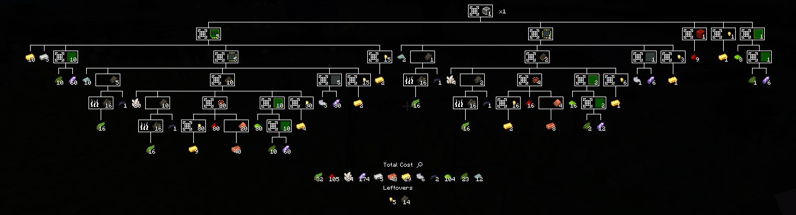

Craftmore was a minecraft server i started worked on very late in 2022, early 2023, the first iteration
was planned to have some serverside content mods like CC-Polymer and tweaks to vanilla progression recipes
to encourage "crafting more" hence the name, in order to get something out playable,
in the second iteration, i ended up just grabbing a few structure mods a few datapacks,
that were all serverside only, and calling it a day, this is what i refer to as craftmore 1
The third iteration isn't really important, because i never really scrapped it as an idea i just needed to
restart on the pack level, for skyblock, which is what iteration 4 is.
The fourth iteration was a skyblock server with a ton more serverside mods, and a semi custom dimension
using the modern beta skylands generator and datapack portals, polyfactory and a few mods for logistics
and tech loaded using polymc, the first version of the server with my mod alchemist, even used end remastered
to make end progression harder, despite multiple people saying they'd play a skyblock, this server basically
had 0 players, and what i refer to as craftmore 2.
This lead during the 20.4 minecraft update for me to start working on the fifth iteration, i didn't actually
hard reset this one, it was actually the fourth iteration updated to 20.4 directly, i called it internally craftmore 2.5
i never really finished it because of certain mods not updating, by the time they did, i was tired.
The sixth iteration was on 20.4, honestly there's not much to say about survival in it,
it was basically a mix of iteration 2, 3 and 5, started bringing the content and progression into a survival world,
i spent time refining the surrounding tech, migrating to a server proxy, making a server lobby mod so i could use a fabric lobby,
making a creative plot server, and before i ended up burning out again the last thing i did was try to get a nucleoid skywars server running.
The seventh was for 21.0/1, the plan was the same for the sixth iteration, it actually went fairly well, the biggest problem was
when i set the deadline, if i waited two more weeks i could've done better with the content, it also needed balance tweaks,
but imo, the core progression was pretty solid, it just needed to be refined, here's some recipe trees from it.

The current and eighth iteration is for 21.3, the plan is to do the seventh but better, so far it's been going well,
but between craftmore 2, 2.5, and 3, i realize i'm either going to have to take a lot more time with it, or get more people.
Craftmore 2 felt like a disaster, like from a design point there didn't seem to be a problem, but i had trouble even getting people
to try the server, and there's so much to do with Craftmore 3.1, if i can recruit any development help that would be useful, so this
site will go over whats planned for the server.
Currently what is set in stone is everything in polymania, alchemist, the rest of the filament mods.
Ofcourse any open source structure mods of decent quality that are released will be added much like Craftmore 1, the pack being
a polymania fork as of 3.1, it's open source, and fairly easy for anyone to install.
Anyone willing to contribute to serverside mods being updated like polymc, spiceoffabric, arcana novum, carpet, and fixing the compat
issue's moonrise has, are also helping. and technically you won't even need to contribute directly for these to help.
There's also the very niche problem of fixing geyser/viaversion compat issues, i don't even know where to begin with these my self
so any help would be appreciated, and again all of that can be done to upstream.
Anyone that can do modding could also contribute to making content for craftmore, i'm planning to expand alchemist
to do some more niche magic mod concepts, and to make a basic ore/tool mod, a polyfactory addon, that is for it
what gt2 was for ic2, as well as an addon for borukva food to add more foods.
Anyone that can do resourcepack stuff could help with potentionally improving vanilla or modded textures for the server,
and help texture stuff mentioned for the above custom content.
Anyone with experience with minigame servers (preferably willing to use nucleoid stuff), could help out with
minigames like skywars.
Players/testers can also help a lot, part of the reason craftmore 3.1 is to bring in more players, plus the more issues caught before
the actual survival world goes up, the longer the world/server will survive before another reset, the test server
is already up, and running mods, if someone wants to test stuff, just ask me and i'll give the ip, here's some screenshots.
Feel free to join the discord below for updates, as far as development most of the stuff needs to be contributed to public projects and not directly anyway, but if you want to work on any of the parts directly related to Craftmore like the progression mod or alchemist, the discord is the place to go, also if there's any mod you want to see, let me know, i'll add near any polymer port if it's not broken, i am skeptical of running mods in polymc, however if a mod fully works or has patches i'll do it.